이번 주에 제일 공들인 건 Q 버튼입니다. Q는 원래 상대에게 후까시를 거는 버튼인데, 거는 순간까지는 이길지 질지 알 방법이 없었어요. 그래서 이번엔 Q를 누르고 있는 동안 시간이 느려지고, 화면이 열화상 카메라처럼 바뀌게 했습니다. 상대 몸에서 불꽃 같은 게 피어오르고, 내 쪽에서도 가닥 같은 기운이 뻗어 나갑니다. 센 놈일수록 불이 크고 사납고요. 숫자는 일부러 하나도 안 띄웠습니다. 눈으로 보고 감으로 판단하라는 거죠.
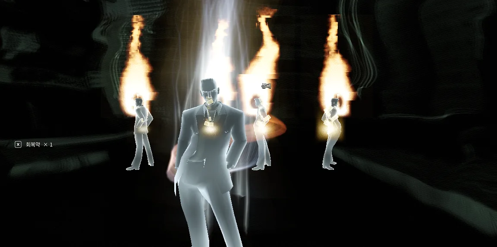
센 놈일수록 머리 위 불이 큽니다. 금빛으로 빛나는 건 지갑이에요.
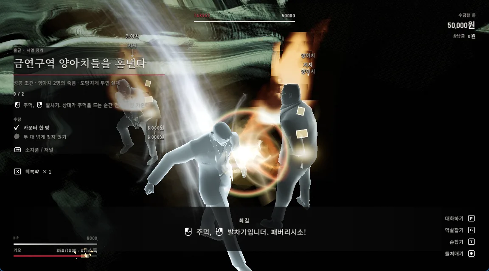
써멀뷰 상태로 싸우면 이런 느낌입니다.
그 위에 '사신의 눈'이라는 걸 하나 더 얹었습니다. 겨눈 상대 머리 위에 따까리, 까리한놈, 행님, 오야붕, 괴물 같은 평가가 열 단계로 뜹니다. 다만 이 글자들이 공중에 이리저리 흩어져 있어서, 처음 보는 각도에서는 잘 안 읽혀요. 카메라를 살짝 틀어야 글자가 맞춰지면서 제대로 보입니다. 그 '기웃거리는' 동작이 곧 상대를 재보는 행동이 되게 하고 싶었습니다. 평가도 일부러 조금씩 흔들리게 해놨습니다. 아리까리한 놈이 내 위인지 아래인지 헷갈려야 거는 맛이 있으니까요. 판정 자체는 정확하고, 헷갈리는 건 눈에 보이는 쪽뿐입니다.
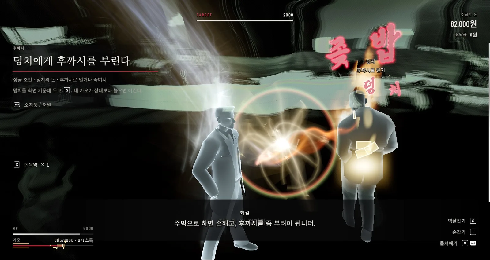
Q를 누르고 있으면 이렇게 보입니다. 머리 위 글자가 사신의 눈이고, 이 덩치는 '좆밥'이라네요.
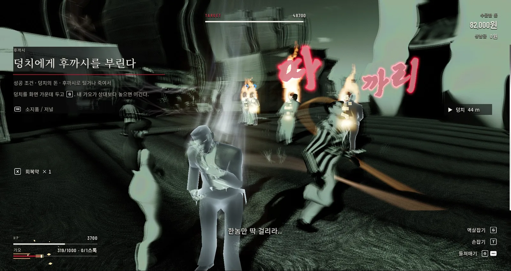
길 가는 사람들 중에 누가 만만한지 둘러보는 중. 이쪽은 '따까리'.
담배 연기도 새로 만들었습니다. 전에는 연기가 몸을 뚫고 지나갔는데, 이제는 몸을 비켜서 흘러가고, 걸으면 흐트러지고, 가만히 서 있으면 뭉게뭉게 고입니다. 들이마시면 불씨가 빨갛게 달아오르면서 연기가 잠깐 멎었다가, 떼면 입에서 후 하고 나와요. 한 개비 물고 있는데 또 피우면 옆에 한 개비를 더 끼웁니다. 가오를 한 번에 채울 때 한 갑을 통째로 꽂으면 개비들이 동그랗게 고리를 만듭니다. E를 길게 누르면 가지고 있는 술·담배를 한꺼번에 태워서 가오를 끝까지 채우는 기능도 붙였습니다. 소주병은 다 마시면 빈 병을 무기로 쥐고 있게 됩니다.
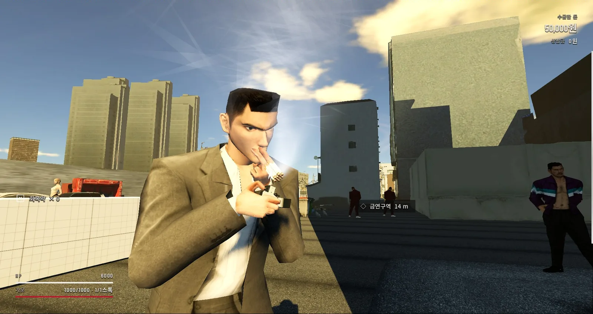
담배 붙이는 동작. 이번 주에 제일 많이 본 장면입니다.
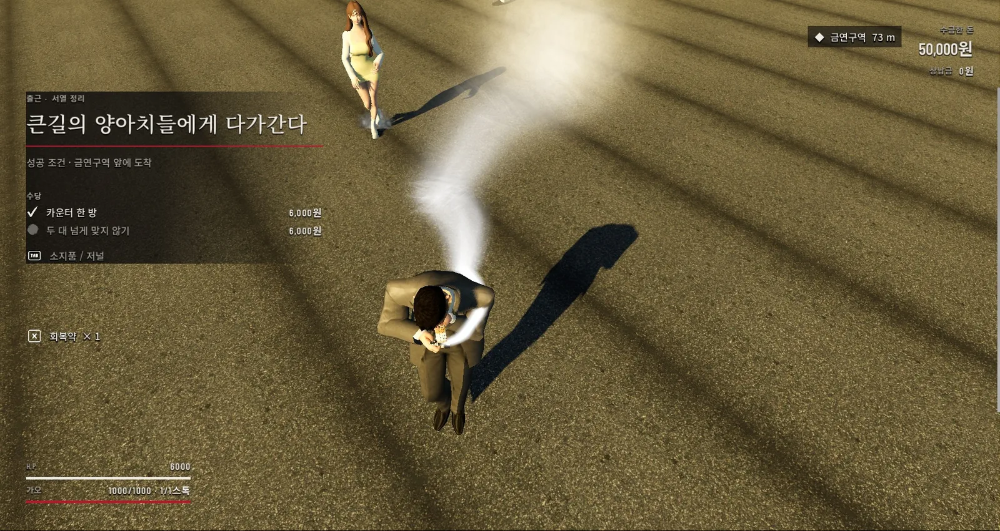
걸으면 연기가 이렇게 뒤로 흘러갑니다.
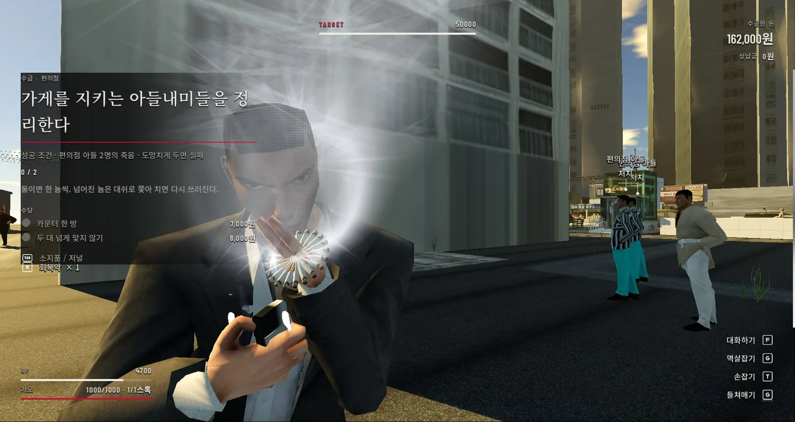
물고 있는데 또 피우면 이렇게 됩니다.
돈을 뜯었을 때도 달라졌습니다. 바닥에 흩날린 지폐가 화면 위 지폐로 바뀌어서 소지금 칸까지 휘어 날아가고, 닿을 때마다 돈 들어오는 소리가 납니다. 때릴 때와 맞을 때의 화면 흔들림도 나눴습니다. 내가 때릴 때는 Blender에서 손으로 키를 찍은 흔들림을 쓰고, 맞을 때는 화면이 뒤로 툭 밀리는 식이에요. 마지막 한 명을 쓰러뜨리는 순간엔 0.25배 슬로모션이 걸립니다.
눈에 안 보이는 고장도 몇 개 잡았습니다. 결투에서 분명히 막았는데 맞거나, 안 막았는데 막히는 일이 있었는데, 알고 보니 맞은 직후 2초 동안 팔의 물리 판정이 흐느적거리면서 눈에 보이는 팔과 최대 35cm까지 어긋나 있었습니다. 보이는 팔은 얼굴 앞에 있는데 판정용 팔은 허리춤에서 놀고 있었던 거죠. 같은 대전을 돌려 보니 이런 경우가 10번에서 0~1번으로 줄었습니다. "5분쯤 하면 게임이 멈춘다"는 문제도 있었는데, 한 번에 두 명을 카운터로 맞히면 주인공이 영원히 굳어버리는 버그였습니다. 카메라랑 HUD가 주인공한테 붙어 있으니 화면 전체가 멈춘 것처럼 보였어요.
그리고 해변 폭풍우. 비가 물건 위에 튀는 물보라가 잘 안 보인다고 해서 손을 댔다가, 이틀 동안 네 번 고치고 세 번 되돌렸습니다. 격자로 찍어보고, 노이즈로 흩뿌려 보고, 가까운 곳에 몰아줘 봤는데 나란히 놓고 보면 결국 원래 것이 제일 나았어요. 남은 건 두 가지입니다. 물보라가 너무 가까운 표면에 묻혀 투명하게 지워지던 것 하나 고치고, 덩어리 모양은 그대로 둔 채 보이는 곳의 덩어리 수만 666개에서 1,056개로 늘렸습니다. 프레임 시간은 거의 그대로고요. 잘 되던 걸 '개선'하는 게 제일 위험하다는 걸 이번에도 배웠습니다.
마지막으로 부끄러운 얘기 하나. 쌓인 작업 기록을 AI한테 정리시켰다가, 그 정리 스크립트가 바로가기처럼 연결된 폴더를 타고 실제 프로젝트 안까지 들어가서 프로젝트 파일 8천여 개를 옮겨버렸습니다. 다행히 지우기 전에 사본을 떠놓는 방식이라 전부 되살렸는데, 그날은 정말 심장이 내려앉았습니다.
- 가오 써멀뷰: Q를 누르는 동안 감속 + 열화상 연출, 숫자 숨김, 상대 불꽃·내 기운 가닥, 게이지 끝 불씨 - 사신의 눈: 10단계 평가, 각도를 틀어야 읽히는 글자, 흔들리는 평가와 확률 승부 - 담배 연기 재작업(비켜 흐르기·들이마시기·내뱉기), 개비 덧꽂기, 가오 풀충전(E 길게) - 수금 지폐가 소지금 칸으로 날아가는 연출, 회복약 빈 병 무기 - 타격 흔들림 때리기/맞기 분리, 마지막 처치 슬로모션, 처치 경직 복원 - 결투 가드 판정 어긋남 수정(10건 → 0~1건), 영구 정지 버그 3건 수정 - 해변 폭풍우 물보라 근접 지워짐 수정, 보이는 덩어리 수 증가 - 테스트용 사흘짜리 이야기 연결(첫째 날 귀가·잠 → 둘째 날 → 셋째 날 결산)
Q 버튼 하나에 일주일을 썼는데, 그래도 이 게임에서 제일 많이 누를 버튼이라 아깝지 않습니다. 그럼 다음에 또...
만든 만큼 무거워져서, 이틀은 치웠습니다
지난 글에서 판을 크게 벌렸더니, 바로 대가가 왔습니다. 게임이 무거워졌어요. 맵에 들어가는 데 오래 걸리고, 들어가서도 사람들이 한꺼번에 움직이기 시작하는 순간 툭툭 끊겼습니다. 그래서 이번 며칠은 새로 만든 것보다 치운 게 더 많습니다.
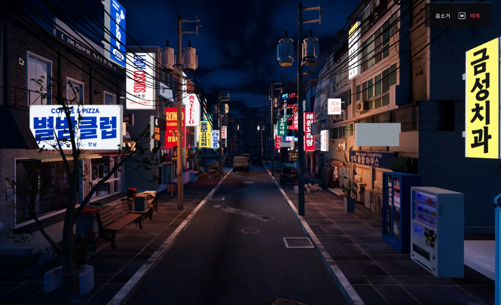
치우는 사이사이 동네도 조금씩 손봤습니다. 간판은 전부 지어낸 가게들이에요.
4일 커밋 제목들을 보면 그날 기분이 그대로 남아 있습니다. "최적화 전 세이브 코덱스가 두렵구나", "진짜 최적화 - 코덱스형님이 온다", 그리고 세 시간 뒤 "코덱스 ○○놈이 렉이 너무 심해서 일단 접고...". 6일엔 "이번엔 클로드가 속을 썩이는구나"입니다. AI 둘을 번갈아 쓰면서 번갈아 화를 냈네요. AI는 "검사 통과, 불일치 0건"이라고 깔끔하게 보고하는데, 원자료를 직접 열어보니 맵 로딩 시간이 오히려 두 배 가까이 늘어 있었습니다. 검사 항목은 다 맞는데 정작 제가 원하던 숫자는 안 재고 있었던 거죠. 뭘 재야 하는지부터 똑바로 말해줘야 한다는 걸 다시 느꼈습니다.
결국 찾아낸 건 대부분 시시한 것들이었습니다. 주인공이 맵에 등장할 때 0.9초쯤 화면이 멈췄는데, 그중 0.888초가 Tab 메뉴 화면을 그 자리에서 처음 읽느라 걸린 시간이었어요. 메뉴를 미리 읽어두게 했더니 바로 사라졌습니다. 군중을 배치할 때는 예비 외형을 고르겠다고 6,942명을 줄 세워 정렬하고 있었고, 그게 0.4초였습니다. 이런 걸 하나씩 걷어내니 가장 긴 멈춤이 1.18초에서 0.6초대로, 메뉴에서 교회 맵 첫 진입이 16.2초에서 12.6초로, 다시 들어갈 때는 10.4초에서 6.7초로 줄었습니다. 아직 0.5초짜리 멈춤이 세 군데 남아 있습니다. 갈 길이 멀어요.
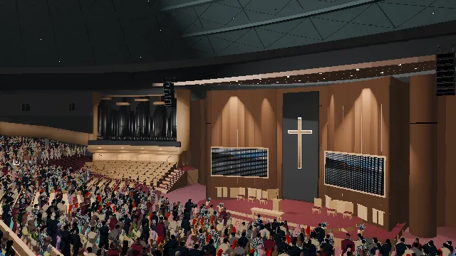
맵에 들어가는 시간을 잰 곳이 이 교회입니다. 이 사람들을 세우느라 멈췄던 거고요.
디스크도 치웠습니다. 검증할 때마다 찍어둔 캡처와 로그가 몇 달 동안 쌓여 있었고, 도시를 조각낸 미리보기 파일 2,813개가 빌드할 때마다 1,400개씩 새로 바뀌면서 커밋을 어지럽히고 있었습니다. 게임패드 아이콘 팩도 실제로 쓰는 건 세 종류뿐인데 5,504개가 통째로 들어와 있었고요. 이런 걸 정리하고 나니 Godot 편집기가 켤 때마다 훑는 파일이 19,734개에서 10,855개로, 거의 절반이 됐습니다.
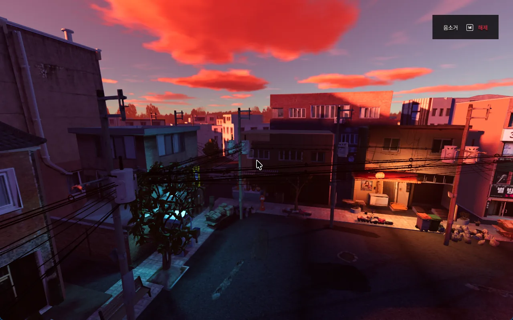
노을 진 동네. 이런 하늘을 보려고 하는 일입니다.
중간중간 숨 돌릴 때는 모션 캡처 자료를 찾으러 다니고, 실사 사진으로 텍스처를 입히는 작업을 했습니다. 군중 캐릭터들 옷을 굽는 도구도 프로젝트 밖에 따로 굴러다니던 걸 이번에 저장소 안으로 들였습니다. 한 번 실행하면 굽기부터 검사까지 끝나서, 외형 11종을 다시 구워도 실패가 하나도 안 났습니다.
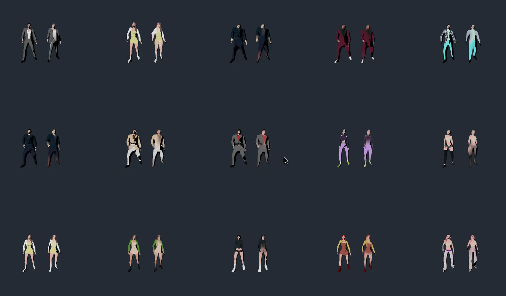
군중 외형마다 원본(왼쪽)과 멀리서 쓸 간략화 모델(오른쪽)을 나란히 놓고 확인합니다.
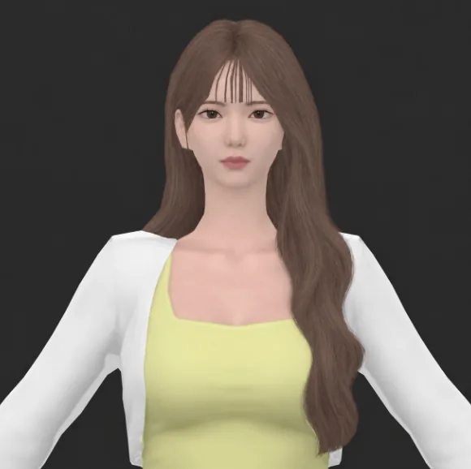
실사 사진으로 텍스처를 입혀본 캐릭터.
- 맵 진입 멈춤 원인 정리(메뉴 미리 읽기, 군중 정렬 제거, 군중 배치를 세 프레임으로 나눔) - 교회 첫 진입 16.2초 → 12.6초, 재진입 10.4초 → 6.7초 - 군중 전투 몸체 준비 비용 28~49ms → 0.25ms, 무한 로딩 경로 수정 - 쌓인 검증 산출물 정리, 편집기 스캔 대상 19,734 → 10,855개 - 리그·군중 굽기 도구 저장소 편입 - 실사 텍스처 작업, 모션 캡처 자료 수집
만드는 건 재미있고 치우는 건 재미없는데, 안 치우면 다음 걸 못 만든다는 걸 매번 이렇게 몸으로 배웁니다. 그럼 다음에 또...
싸움 하나에서 조직 하나로
지난 글이 "한 대 때리는 맛"에 관한 이야기였다면, 이번 사흘은 판을 키운 이야기입니다. 쓰러뜨린 상대를 부하로 거두는 것까지는 지난번에 만들었는데, 거둔 부하로 뭘 하느냐가 비어 있었거든요. 그래서 점령전을 만들었습니다.
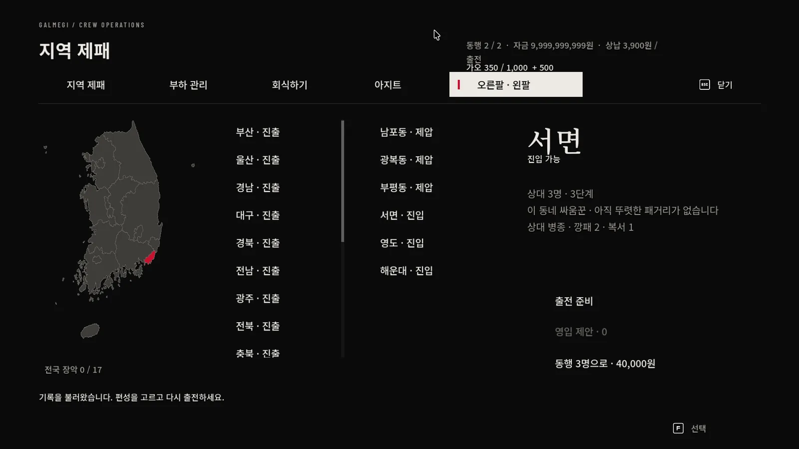
남포동, 광복동, 부평동까지 먹었고 다음은 서면입니다. 오른쪽 위 자금은 테스트용이에요.
남포동에서 시작해서 지도를 한 칸씩 먹어 들어가는 방식입니다. 구역을 고르고, 데려갈 부하를 고르고(처음엔 두 명, 키우면 여섯 명까지), 같이 싸우거나 뒤에서 지켜봅니다. 이기면 그 구역이 내 색으로 칠해지고, 쓰러뜨린 상대 중에 쓸 만한 놈은 데려옵니다.
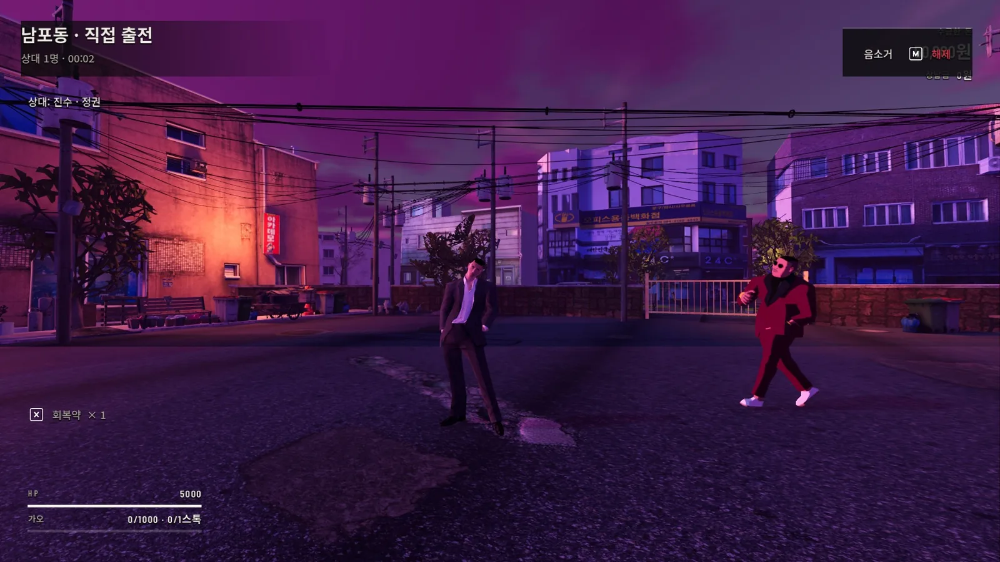
남포동, 첫 구역.
지면 쓰러진 부하는 그대로 죽습니다. 명단에는 흑백 영정이랑 국화 한 송이가 남고요. 이걸 넣고 나니 부하를 아무렇게나 던져 넣지 않게 되더라고요. 저부터 그랬습니다.
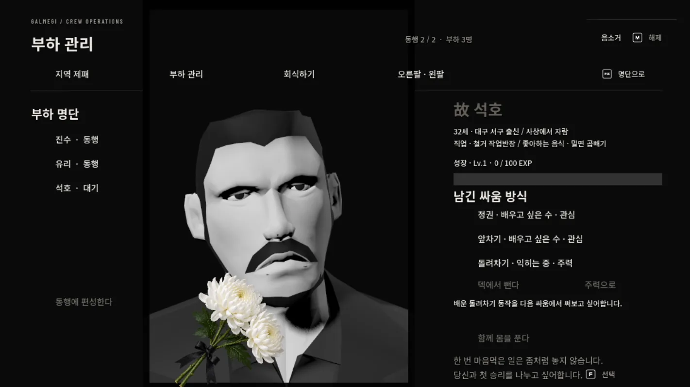
정벌에서 쓰러진 부하는 이렇게 남습니다.
싸움마다 진흙탕 같은 전장 조건이 14가지 중에 붙고, 권역마다 우두머리가 들고 나오는 수법이 10가지 있습니다. 나한테 진 놈이 원한을 품고 다시 찾아오기도 하고, 몇 번 엮이면 숙적이 되기도 합니다. 만들면서 한 가지 무조건 이기는 방법을 찾아버려서, 그걸 막는 데 하루를 더 썼습니다.
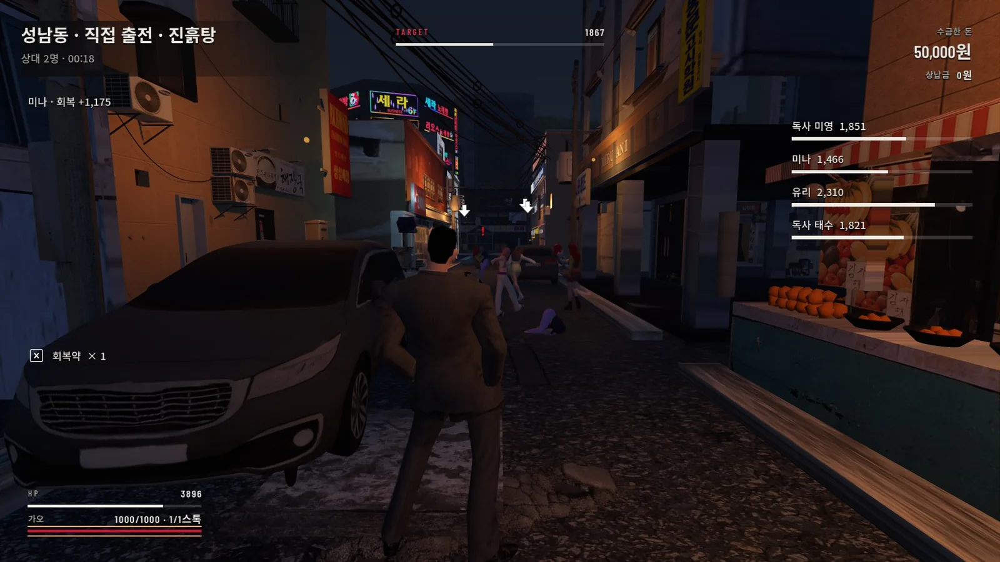
직접 출전하면 부하들 체력이 오른쪽에 같이 뜹니다. 이번 전장 조건은 진흙탕.
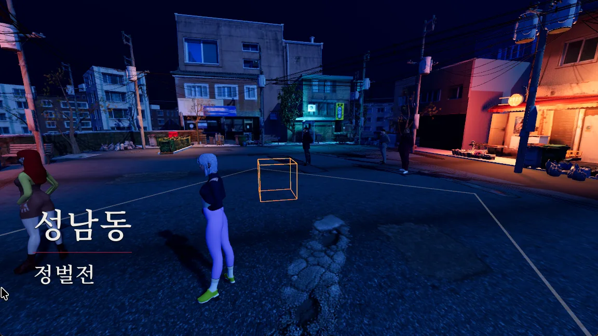
정벌전 시작. 동네 이름이 뜨고 부하들이 따라 들어옵니다.
그리고 엑셀 방송. 인터넷 방송에서 별풍선 순위대로 BJ들 자리를 줄 세우는 그 방송 맞습니다. 조직 돈벌이로 방송국을 굴린다는 설정인데, 커밋 제목에 썼듯이 이건 점점 "도파민 중독 모드"가 되어가고 있습니다. 숫자가 올라가고, 채팅이 터지고, 순위가 바뀌는 걸 보고 있으면 만드는 저도 손을 못 떼겠더라고요. 노래방에 펀칭머신 미니게임도 하나 들어갔습니다. 아직 펀칭머신 쳐서 뭐가 되는지는 안 정했고, 일단 치는 맛만 있습니다.
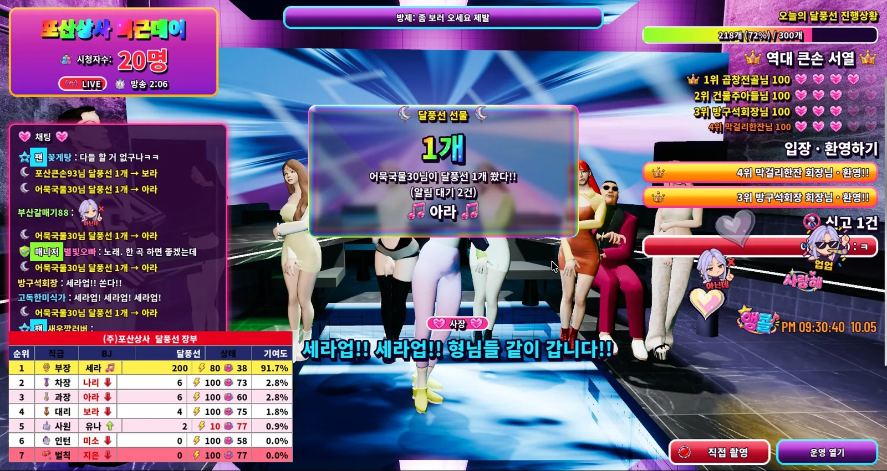
엑셀 방송. 별풍선 대신 달풍선입니다.
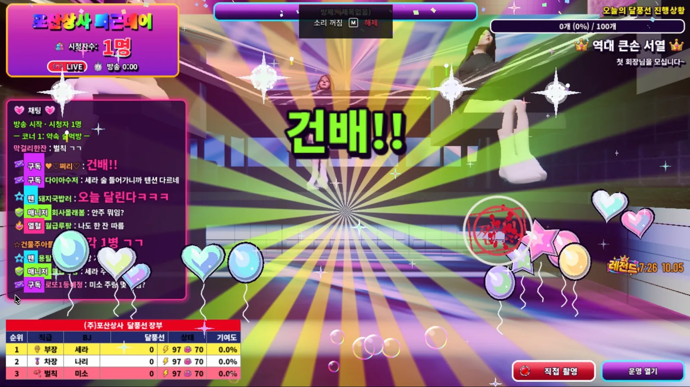
건배!! 이 모드는 일부러 이렇게 정신없게 만들고 있습니다.
작은 것들도 꽤 들어갔습니다. 동네에서 벌인 싸움을 누가 봤으면 그게 소문이 되는데, 공중화장실에 들어가 있으면 그 소문을 엿들을 수 있습니다. 내 얘기를 뒤에서 하는 걸 듣게 되는 거죠. 지하철은 이제 진짜로 탑니다. 왕복으로 다니고, 문이 열리고, 승객이 타고 내립니다.
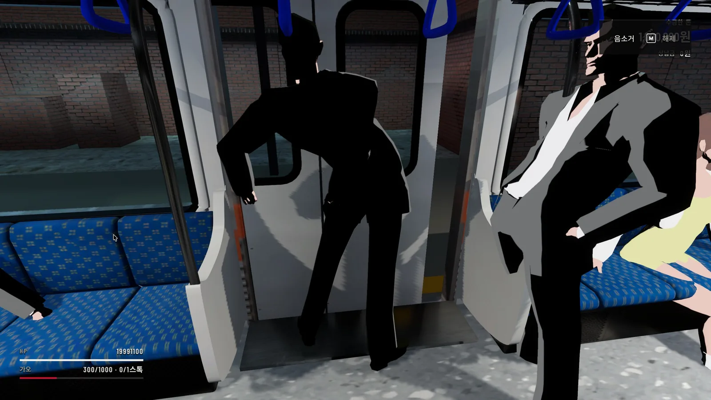
객실 안 풍경. 정장 차림으로 타면 이렇게 보입니다.
편의점에서 장도 보고, 병째 들이켜는 동작은 모션 캡처로 넣었습니다. 배경음악은 AI랑 FL Studio를 연결해서 같이 만들어보는 중입니다. 그래픽 옵션에 후처리 효과 켜고 끄는 것도 추가했고요.
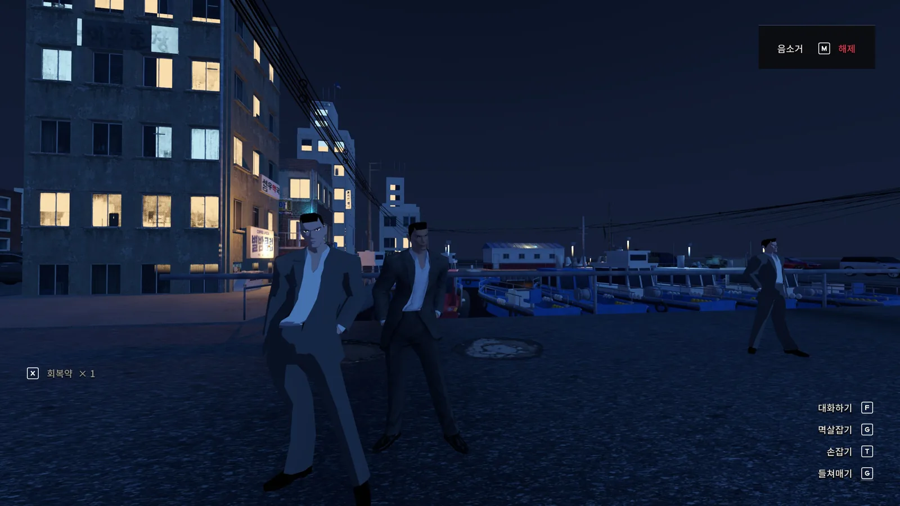
새로 생긴 항구 전장.
- 점령전: 지도·출전 편성(동행 최대 6명)·관전·결산·영입, 영구 사망과 영정 - 전장 조건 14종, 우두머리 수법 10종, 원한·설욕전, 숙적, 소지품 30종과 고물상 - 정벌 전장 추가: 상업 거리, 시장 광장, 항구, 밤골목 - 엑셀 방송 모드 대확장, 펀칭머신 미니게임, 이모티콘 - 소문·뒷담 시스템(공중화장실에서 엿듣기) - 가오 시스템 개편(평판 상처·회복·목격), 기술 상점 - 지하철 탑승, 편의점 장보기, 무기 뽑기, 병 마시기 모캡 - FL Studio 연동 작곡, 그래픽 옵션 후처리, 자동 카메라 개편
이제 주인공이 혼자 싸우는 게임에서, 사람을 모으고 잃는 게임이 되어가는 것 같습니다. 그럼 다음에 또...
한 대 때리는 맛
지난 글 다음 날 커밋 제목이 "부산행" 한 마디고, 그다음 커밋이 9월 29일입니다. 일주일 쉬고 돌아와서 붙잡은 주제는 딱 하나, 때리는 게 재밌냐였습니다. 커밋 메시지에는 "전투 도파민 연구"라고 적어놨더라고요. 잘 만든 액션 게임들을 한참 돌려보면서, 한 대 칠 때 화면에서 뭐가 일어나는지 프레임 단위로 뜯어봤습니다.
그래서 들어간 것들입니다. 상대가 주먹을 준비하는 순간에 먼저 치면 '카운터', 휘두르는 도중에 치면 더 세게 들어가는 '퍼니시 카운터'가 됩니다. 회피는 누른 직후 0.15초 안에 피하면 저스트 회피가 되고, 그 직전에 상대 눈이 번쩍하면서 예고를 줍니다. 상대가 큰 걸 헛치면 몸에 금빛 틈이 생기는데, 거기를 치면 상대가 휘청이는 '코마' 상태가 됩니다. 약점을 세 번 더 치면 터지면서 滅 도장이 찍히고요. 도망가는 놈 등에 한 대 더 넣는 추격타도 생겼습니다.
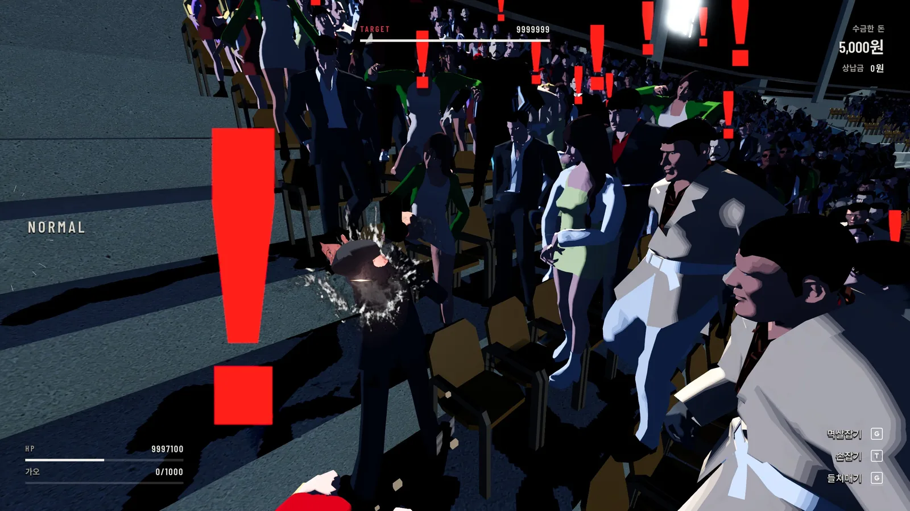
야구장 관중석 한가운데서 한 대. 주변 사람들이 놀라서 돌아봅니다.
맞는 쪽도 손봤습니다. 이제 맞은 부위를 손으로 감싸고, 다리를 맞으면 다리가 제대로 꺾입니다. 가오를 걸어 돈을 뜯는 '삥뜯기'도 다듬었는데, 털린 상대는 그 뒤로 굽신거리는 '쫄 모드'가 됩니다. 거기서 한 대 더 치면 남은 돈 다 뱉고 도망가요. 이게 생각보다 재밌어서, 쫄아 있는 놈을 어디에 써먹을지 한참 고민했습니다.
그리고 쓰러뜨린 상대를 부하로 거두는 '동료가 되라' 모드를 만들었습니다. 영입하고, 정벌 보내고, 같이 회식하고, 잘못되면 죽기도 합니다. 이게 다음 글의 점령전으로 이어집니다.
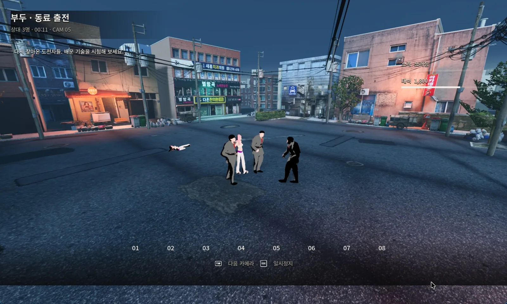
부하들만 내보내고 카메라를 돌려가며 지켜볼 수도 있습니다.
싸우는 도중에 문을 걷어차고 증원이 쏟아져 들어오는 장면도 만들었고, 그런 연출을 모아서 한 번에 돌려볼 수 있는 뷰어도 하나 만들었습니다. 사건을 블록처럼 짜 맞추는 시퀀스 편집기도 '미션 메이커'로 키웠습니다. 앞으로 미션은 전부 이걸로 만듭니다.
새 기능을 넣을 때마다 게임은 무거워져서, 사이사이 최적화도 계속했습니다. 9월 30일 커밋에 "최적화 짬처리는 계속해서 10시간 넘게 하는 중"이라고 적혀 있는데, 실제로 그랬습니다. NPC들이 멀어지면 간단한 모델로 바뀌어야 하는데, UV가 엉켜 있어서 엔진이 단순화를 제대로 못 하던 걸 UV를 펴서 해결하기도 했고요.
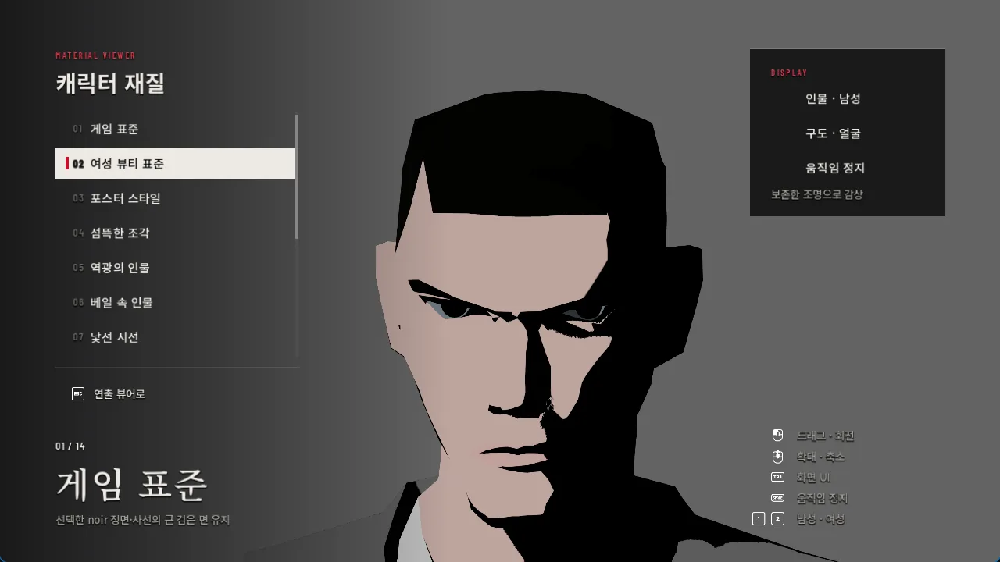
캐릭터마다 제각각이던 재질을 하나로 맞추면서 비교용 뷰어도 만들었습니다.
- 카운터·퍼니시 카운터, 저스트 회피와 예고 섬광, 추격타 - 코마 피니시(금빛 틈 → 코마 → 약점 3회 → 滅) - 피격 부위 보호 반응, 피격 다리 IK 개선 - 삥뜯기 개선과 쫄 모드 - 동료 영입·정벌·회식·사망 - 적 난입 시퀀스, 연출 뷰어, 뮤직 플레이어 - 시퀀스 편집기 → 미션 메이커, 사건 분류표 - 교회·야구장 맵 작업, NPC LOD 개선, 캐릭터 조명·재질 통일
아직 "재밌다"고 말하긴 이르지만, 적어도 때릴 때 손이 심심하지는 않게 됐습니다. 그럼 다음에 또...
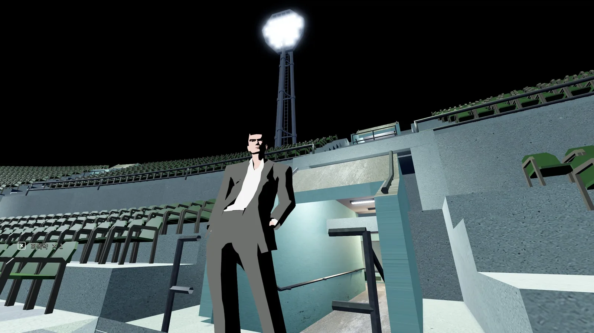
밤 야구장. 싸움이 끝나면 이런 데서 담배 한 대 피웁니다.
계단을 내려가는 데 열흘
지난 글을 올리고 열흘이 지났습니다. 오늘 커밋 제목이 "뭔가 많은일이있었음..."인데, 정말 그랬어요. 다만 대부분은 화면에 안 보이는 일이었고, 눈에 보이는 건 결국 계단 하나입니다.
그동안 이 게임의 계단은 사실 계단이 아니었습니다. 계단 위에 눈에 안 보이는 경사로를 덮어두고, 그 위로 미끄러뜨리고 있었거든요. 대부분의 게임이 이렇게 합니다. 싸고 잘 되니까요. 그런데 이 게임은 지하철역, 골목, 건물 지하실이 무대라 계단을 정말 자주 밟습니다. 주인공이 계단을 스르륵 미끄러져 내려가는 걸 몇 달 보다 보니 더는 못 참겠더라고요.
결국 이 골목을 제대로 걸어 다니게 하려고 하는 일들입니다.역만 있고 열차가 없으면 섭섭하니까요.
그래서 경사로를 걷어내고 진짜로 한 단씩 밟게 바꿨습니다. 해보니 올라가는 것보다 내려가는 게 훨씬 어렵습니다. 올라갈 땐 발 디딜 곳이 눈앞에 있는데, 내려갈 땐 허공에 발을 내밀고 바닥이 닿을 때까지 기다려야 하거든요. 그동안 몸이 뻣뻣하면 로봇 같고, 너무 풀어두면 굴러떨어집니다. 그래서 발이 닿는 순간, 체중이 앞발로 넘어가는 타이밍, 거기에 맞춰 상체가 풀리는 정도를 하나씩 따로 맞췄습니다.
확인용으로 코스 21개짜리 연습장도 만들었습니다. 높이 2m짜리 큰 계단부터 0.51m 쓰레기통, 0.30m 보도블록 턱까지요. 양복 입은 남자가 쓰레기통 위에 올라가 서 있는 걸 스무 번쯤 보고 있으면 좀 웃깁니다.
경사로 없이 진짜 단을 밟고 내려갑니다. 여기까지 열흘.30cm 보도블록 턱. 코스 21개 중 실제로 제일 자주 밟게 될 높이입니다.연습장을 나오면 이런 걸 밟게 됩니다.
그리고 지난 글에서 자랑했던 걸 일주일 만에 걷어냈습니다. 9월 9일 글에서 AI 도구 얘기를 길게 했었죠. 쓸 때는 진심이었습니다. 그런데 9월 17일 커밋 제목이 "아스트라 놀이 끝 mcp 걷어내고 이란 다시 체계화부터..."입니다. Blender로 간접광을 구워 오던 애드온(576줄)도 통째로 지웠고요. 도구를 5분 만에 만들 수 있는 것과, 그걸 계속 관리할 수 있는 건 다른 문제더라고요. 일주일 사이에 제가 이해 못 하는 것들이 프로젝트에 너무 많이 쌓여서, 그걸 다시 걷어내는 데 또 며칠이 걸렸습니다. 그중 하루의 커밋 제목이 "다이어트"입니다.
오랜만에 성능도 제대로 재봤습니다. 도시 한 블록에 걷는 사람 100명, 차 26대, 캐릭터 8명을 세워놓고 재보니 한 프레임에 평균 3.30ms가 걸렸습니다. 그중 그래픽(GPU)이 1.18ms, 물리 계산(CPU)이 2.41ms였어요. 그래픽이 아니라 물리가 무거웠던 거죠. 그동안 조명이랑 그림자를 깎고 있었는데, 엉뚱한 데를 파고 있었던 겁니다.
더 놀란 건 로딩이었습니다. 게임을 켜고 레벨을 읽기 시작할 때까지 7.9초가 걸리는데, 정작 레벨 파일을 읽는 건 2.3초면 끝납니다. 앞의 7.9초는 엔진이 켜지고, 게임 시작할 때 자동으로 뜨는 스크립트 열일곱 개가 하나씩 준비되는 시간이에요. 그동안 화면엔 아무것도 없고요. 한 프레임을 1ms 줄이겠다고 며칠을 썼는데, 플레이어가 제일 오래 기다리는 시간은 재본 적도 없었습니다.
지난 글 끝에 "성능이 이상하면 코드보다 내 책상부터 치우자"고 썼는데, 이번에도 책상이 문제였습니다. 이 컴퓨터 램이 16GB인데, 켜둔 프로그램들이 달라는 양을 합치면 23.8GB였어요. 모자란 만큼 디스크를 램 대신 쓰고 있었으니 끊길 수밖에요. 제일 많이 먹는 건 Godot 편집기(8.3GB)였는데, 메모리가 새는 게 아니라 제가 씬 탭을 열 개나 열어둔 탓이었습니다. 편집기는 탭을 닫기 전까지 그 씬을 통째로 메모리에 들고 있고, 큰 맵 하나가 기가바이트 단위거든요. 프로파일러를 켤 게 아니라 탭부터 세어봤어야 했습니다.
나머지 시간은 손으로 하던 귀찮은 일을 자동으로 돌리는 데 썼습니다. 캐릭터 뼈대 검사를 자동으로 돌려서, 손가락 60개 위치를 하나하나 재고 점수를 매기게 했습니다. 도시에 깔린 에셋 362개도 크기별로 나눠서, 각각 몇 미터 밖까지 보일지 한 번에 정할 수 있게 했고요. 건물은 800m, 작은 소품은 50m, 아주 작은 디테일은 25m. 이런 건 만들 땐 재미없는데, 한 번 만들어두면 다시는 안 해도 됩니다. 열흘 동안 한 일 중에 제일 잘한 걸 고르라면 아마 이쪽일 겁니다.
멀어지면 삼각형 1만 개짜리를 246개짜리로 바꿔 끼웁니다. 눈으로 확인하려고 만든 뷰어.에셋 362개를 크기별로 나눠 몇 미터까지 보일지 정합니다. 손으로 하면 하루 걸립니다.뼈대 검사를 자동으로 돌린 결과. 손가락 60개를 일일이 재서 점수를 매깁니다.
- 보조 경사로 없는 계단·턱 보행으로 교체, 내려갈 때 착지·체중 이동·상체 풀림 보정 - 코스 21종 보행 연습장과 자동 검사 추가 - 몸이 출렁이는 효과를 그래픽 카드 쪽으로 옮김 (2.53ms → 0.29ms) - 군중 처리·NPC 절전·끊김 감시 다시 작업 - 외부 AI 연동 도구 일괄 제거, 안 쓰는 파일·에셋 정리 - 아이폰 얼굴 캡처와 영상 모션 캡처를 리깅 작업에 연결 - 모델 뷰어와 외형 정리, 캐릭터 조명 다시 작업 - 도시 블록 성능 실측과 로딩 구간 측정 도구 추가
다음 글에서는 계단 말고, 계단을 내려가서 만나는 것들 얘기를 할 수 있으면 좋겠네요. 그럼 다음에 또...
이런 걸 만들고 있을 때가 제일 즐겁습니다.
뼈대를 갈아엎고, 넘어져도 혼자 일어나게
지난 글을 올리고 이틀이 지났습니다. 커밋 기록을 다시 보니 "진짜 대격변할거임 스켈레톤", "대격변 2" 같은 게 줄줄이 있네요. 저런 제목을 적는 날은 보통 뭔가 크게 부수는 날입니다. 이번엔 캐릭터 뼈대였어요.
그동안 NPC마다 뼈대를 심은 방식이 제각각이라, 다리가 엉뚱한 뼈에 붙어 있거나 어깨를 움직이면 몸통까지 같이 끌려가는 애들이 섞여 있었습니다. 평소엔 티가 안 나다가, 맞고 축 늘어지는 순간(랙돌)에 관절이 꺾이면 안 되는 방향으로 꺾입니다. 그래서 보스랑 블로커는 몸을 통째로 다시 뽑고, 어깨와 골반이 끌고 가는 범위를 원래 체형에 맞게 다시 잡았습니다. 중간에 사고도 여러 번 났습니다. 아래 얼굴 터진 사진처럼요.
뼈대를 갈아엎는 도중. 이런 걸 수십 번 봤습니다.정리를 마친 NPC들. 이제 뼈대가 전부 같습니다.
이번 이틀의 제일 큰 수확은 넘어진 캐릭터가 혼자 일어나는 것입니다. 일어나는 애니메이션을 재생하는 게 아니라, 축 늘어진 물리 상태 그대로 힘을 줘서 일어납니다. 엎드린 채로 손을 짚고, 한쪽 무릎을 당기고, 발을 딛고, 골반을 들고, 섭니다. 단계는 시간이 지나서 넘어가는 게 아니라, 실제로 손이 바닥에 닿았는지, 무릎이 어디에 닿았는지를 보고 넘어갑니다. 중간에 막히면 반대쪽으로 다시 굴러서 팔다리를 풀고 재시도하는데, 최대 네 번까지 합니다.
랜덤한 방향으로 74번 떨어뜨려 봤더니 전부 일어나서 5초 동안 서 있었습니다. 다만 손이 순간적으로 초속 20m로 튀거나, 발이 바닥에 6cm쯤 박히는 프레임이 아직 남아 있어서 "성공률 100%"를 곧이곧대로 믿긴 어렵습니다. 그래도 쓰러진 놈이 꾸물꾸물 몸을 일으키는 걸 처음 봤을 땐 좀 소름 돋았어요.
여기서 다시 일어납니다. 애니메이션이 아니라 물리로.
도시도 구역으로 나눴습니다. 지상 도시랑 지하철역을 한꺼번에 다 들고 있으니 버거워서, 계단을 오르내릴 때 필요한 쪽만 읽고 반대쪽은 내려놓게 바꿨습니다. 계단을 왔다 갔다 하며 재보니 프레임이 26ms에서 17ms로 줄었고, 지하로 내려가면 그래픽 메모리 120MB가 비워집니다. 도로도 위성사진 위에 선을 긋는 방식으로 다시 깔았고, 그 도로를 그대로 신호등이랑 사람들이 걷는 길로 씁니다. 초록불에 차가 지나가고 그다음에 사람이 건너는, 그 당연한 장면 하나 만드는 데 손이 꽤 많이 갔습니다.
위에서 본 도시. 이걸 구역으로 나눠서 필요한 곳만 읽습니다.
조명은 요즘 제일 재미있게 하는 부분입니다. 벽이나 천장에 한 번 튕겨서 퍼지는 빛(간접광)만 Blender로 미리 계산해서, Godot에 다시 얹는 방법을 만들었습니다. 아래 지하철역 두 장이 같은 장면인데, 두 번째는 텍스처를 다 벗기고 빛만 남긴 겁니다. 붉은 천장 빛이 바닥까지 은은하게 번지는 그 느낌, 저는 이게 부산 지하철의 8할이라고 생각합니다.
간접광을 미리 계산해 넣은 지하철역.같은 장면에서 텍스처를 전부 벗긴 것. 빛만 남았습니다.
- 넘어진 랙돌이 물리로 일어나는 기능 새로 구현, 낙하 74가지 조건 검사 - 캐릭터 뼈대·스키닝 정리, 보스/블로커 외형 다시 뽑기, 뼈대 설정 덮어쓰기 검사 애드온 추가 - 지상 도시·지하철역 구역 나눠 읽기와 충돌 미리 굽기, 계단 왕복 성능 검사 - Blender 간접광 굽기 경로와 텍스처 UV 도구 추가 - 도로 스케치로 신호·보행 경로 만들기, 군중/차량 처리 변경 - 최고 난이도 협공 전투 연결, 지하철 실전 전투 자동 검사 추가
마지막으로, 오늘 커밋 제목은 "아마도 스트리밍 때문에 전투 렉이 아주 심하다"입니다. 결론부터 말하면 범인은 스트리밍이 아니었습니다. 언젠가 옵션 창에서 만져놓고 잊어버린 물리 계산 횟수(초당 143번)가 설정 파일에 저장돼 있었고, 실행할 때마다 조용히 그 값으로 돌아가고 있었어요. 화면을 한 번 그릴 때마다 물리를 여덟 번씩 돌리고 있었던 셈입니다. 초당 60번으로 내리니 30ms가 11ms가 됐습니다. 덤으로, 다섯 시간 전에 띄워놓고 잊어버린 테스트 프로그램이 CPU 코어 두 개를 먹으면서 아직도 돌고 있는 것도 찾았습니다. 성능이 이상하면 코드를 의심하기 전에 내 책상부터 치워야 한다는 걸 또 배웠네요. 그럼 다음에 또...
결국 만들고 싶은 건 이런 장면입니다.
GPT 아스트라 등장, 1인 인디게임 개발의 혁명
부산 토박이 우당탕탕 액션 갈매기를 개발한 지 어언 반년이 되었습니다. 초여름에 권유를 받아 바이브코딩을 시작했는데, 사실 활용이 쉽지 않았습니다. 초심자일수록 통제 가능한 범위가 좁고, AI가 쓴 코드는 아예 구조조차 파악하기 힘들었기 때문입니다. 그 때문에 개발 속도가 오히려 꺾이기도 하고, 완전히 멘붕해버려 아트 작업에만 몰두하기도 했습니다. 그러다 서서히 익숙해질 무렵 아스트라를 사용할 수 있게 되었네요. 예상했던 것보다 훨씬 탁월한 능력을, 초심자도 완전히 컨트롤할 수 있도록 도와주는 것 같습니다. 개인적으로 1인 개발하면서 가장 괴로웠던 부분은 툴을 만드는 것이었는데요. 플러그인, 애드온부터 시작해 맵이나 시퀀스를 자동화하고 파이프라인을 꾸리는 것, 데이터를 추적해 관리하거나 코드로 그런 '지도'를 쌓아가는 것이 너무도 버겁게 느껴졌습니다. 하지만.. 추론 능력이 뛰어난 AI는 확실히 다르네요. 애드온을 전전하며 맘에 드는 효과를 내기가 불가능에 가까워 보였던 도로 자동화 툴이나, 전투를 반복 학습시켜서 적 AI를 업데이트하는 기능 등 그야말로 글로 적기만 하면 5분 만에 새로운 툴을 만들어 주니 개발에 탄력이 붙습니다.
애드온을 전전하다 포기했던 도로 자동화 툴. 점을 찍으면 도로가 깔립니다.
모델링도 확실한 개선이 느껴집니다. 특히 기존 Meshy나 Hunyuan 같은 툴에서 속이 꽉 찬 (..) 50만 버텍스 모델을 들고 멘붕해보신 분들이라면, 아스트라가 얼마나 게임 친화적인 로우 폴리 모델을 뽑는지 체감하실 수 있다고 생각합니다.
미용실.노래방.대예배당.야구장.
이런. 말투가 왠지 약 파는 사람처럼 돼버렸네요. 존댓말로 쓰니 왠지 더 어색한 문장이 이어집니다. 어디선가 본 말투 같달까요(웃음) 어쨌든, AI 칼럼니스트가 아니고 게임 만들려고 용쓰는 입장이니, 작업 내용을 남깁니다.
- 전투·NPC·도플갱어 정책과 전투 테스트 환경 추가 및 변경 - 불·연기·비·수면 VFX와 관련 재질·셰이더 변경, 검증 도구 추가 - 카메라·애니메이션·군중 처리 및 관련 검증 코드 변경 - 레벨·환경 에셋 변경과 도로 편집 애드온 추가 - 프로젝트 구조 문서와 관련 작업 문서 갱신
불·연기 효과를 얹은 지하철역 난투.
역시나 문제는 재미 요소인데요. 이 게임의 재미는 물론 액션으로 뒷받침되어야겠지만, 반복적인 전투를 수행하는 비트엠업으로 그 탄력을 계속 이어나가는 것은 제 역량으론 무리라고 생각됩니다. 대신 스스로 잘할 수 있다고 생각되는 분위기, 장소의 현장감을 연구하고 있습니다. 모션, 색감, 환경음, 이런 감각적인 요소들 말이죠. 그런 것들을 특출나게 잘하는 게임들이 가끔 보이는데, 개인적으로 그런 대리체험 혹은 몰입 가능한 세계로서, 게임을 가장 즐기는 것 같습니다.
이런 거리의 공기를 만들고 싶습니다.지하철 승강장."어이, 거 잠깐 서 보소."
글이 너무 길어졌네요. 그럼 다음에 또...
혼자 서는 법부터 다시
사이트를 열어놓고 열흘 동안 글을 못 썼습니다. 핑계를 대자면, 8월 하순 내내 캐릭터 몸 움직임에 매달려 있었어요. 먼저 던지기랑 벽꽝, 이즈나 드롭을 넣었습니다. 상대를 붙잡아서 머리부터 바닥에 꽂는 그 기술이요. 사람이 유리창을 뚫고 나가야 하니까 유리 파편도 같이 만들었습니다. 그다음은 파쿠르와 클라이밍입니다. 턱을 짚고 올라가고, 벽을 타고, 3단 대시로 내달리는 것까지요. 도시가 넓어지니까 결국 이동이 재미없으면 다 재미없더라고요.
그러다 이족보행 로봇에 빠졌습니다. 8월 30일 하루에만 커밋을 열두 번 했는데, 제목이 "예쁘게 자빠짐", "4초 정도 버티는듯", "모르겠다 나도" 순서입니다. 사람 몸 관절마다 모터를 달아서 스스로 균형을 잡게 해보는 실험이었는데, 결론부터 말하면 지금 물리 설정(초당 60번 계산)으로는 원리상 못 섭니다. 발이 땅을 딛고 반응하는 건 그것보다 훨씬 빨리 일어나거든요. 대신 그 과정에서 얻은 '발을 어디에 디딜지' 규칙은 캐릭터 다리 움직임(IK)에 옮겨 넣었습니다. 덕분에 맞고 넘어지는 건 확실히 좋아졌어요.
맞으면 몸이 물리로 접힙니다. 맞는 쪽만큼은 확실히 좋아졌습니다.
지하철역도 짓기 시작했습니다. 부산 지하철 특유의 주황색 격자 천장, 사실 진짜로 울퉁불퉁하게 만든 게 아니라 평평한 판에 깊이가 있는 것처럼 보이게 속인 재질(패럴랙스)입니다.
주황색 격자 천장은 진짜 요철이 아니라 속임수입니다.
그리고 군중. 수천 명을 한 번에 세워놓고 프레임을 재봤습니다. 사람이 많아야 도시 같아 보이는데, 사람이 많으면 프레임이 떨어집니다. 이 싸움은 아마 끝까지 갈 것 같아요.
사람이 많아야 도시 같은데, 사람이 많으면 프레임이 떨어집니다.
- 가오 시스템 밸런싱과 결투 진입, 던지기·벽꽝·유리 파편 - 이즈나 드롭, 파쿠르·클라이밍·3단 대시, 다리 IK와 무릎 보정 - 액티브 랙돌 도입, 이족보행 균형 실험(실패, 규칙만 옮김) - 지하철역 블록아웃, 인파 셰이더 굽기, 군중 부하 측정 - 노래방·고시원 실내 맵, 카메라 게이트, 블렌더 뷰포트 애드온
그럼 다음에 또...
이런 빛을 만들고 싶어서 계속 파는 중입니다.
갈메기 사이트 개설
인디 게임 개발을 시작한 지도 벌써 1년여가 되었습니다. 애지중지 길러오던 [한국형 누아르 액션 갈메기]도 슬슬 게임같은 모양새가 되어가고 있기 때문에!! 재미있는 일들도 많이 생기고 남기고 싶은 일들도 많습니다. 매일의 작업에 의미를 더하고 또 루틴으로 잘 보관해보고자, 독립된 사이트를 개설하여 운영하고자 합니다. 아직 열심히 개발중이기 때문에 내용도 두서없고 아마 실없는 내용이 대다수일거라고 예상합니다만, 그럼에도 함께 즐겨주시면 더할 나위 없이 기쁠 것입니다. 그럼 잘 부탁드립니다.
게임에 이름이 생겼습니다
8월 초에 잠깐 팀으로 작업해본 적이 있습니다. 혼자 붙잡고 있던 프로젝트를 남한테 열어주는 게 이렇게 정신없는 일인 줄 몰랐네요. 제일 먼저 한 일은 이름 붙이기였습니다. 제목을 Sam in Busan으로 바꾸고, 타이틀 그림을 시작 화면에 걸었습니다. 주인공한테 이름이 생기니까 갑자기 게임 같아 보이더라고요.
이름이 생긴 남자.
이때 웹 브라우저에서도 돌아가게 만들었습니다. 클릭 한 번으로 열리는 데모가 있어야 남한테 보여줄 수 있으니까요. 그런데 이 웹 빌드가 사람 잡습니다. 처음 뽑은 게 1.4GB였어요. 게임이 아니라 영화 한 편 용량이죠. 텍스처 해상도를 줄이고, 이미지를 압축하고, 안 쓰는 에셋을 빼고, 미리 한 번 더 압축(gzip)해서 678MB까지 줄였습니다. 그래도 크긴 한데, 일단 열리긴 합니다. 어차피 기다려야 하니까 로딩 화면에 스토리랑 조작법이라도 넣어뒀습니다.
이 시기에 만든 것 중 제일 마음에 드는 건 'Y2K 감자 필터'입니다. 화면을 일부러 저해상도로 뭉개서 2000년대 초 게임처럼 보이게 하는 건데, 이거 켜놓고 한참 놀았습니다. 결국 기본으로는 안 켰지만요.
Y2K 감자 필터. 쓸모는 없지만 즐거웠습니다.
- 게임 제목 변경, 타이틀 그림과 시작 화면, 스테이지 선택과 로딩 화면 - 웹 버전 지원과 용량 줄이기(1.4GB → 678MB), 웹 배포 - 해변 보스전, 동료 시스템, 목격자 AI(행패를 본 NPC의 반응) - 효과음 라이브러리, 애니메이션 LOD, 입력 캐싱 - 해변 엔딩 내레이션과 자동 저장, 시퀀스 연출
그럼 다음에 또...
얼굴은 여전히 손으로 팝니다.
비 만드는 데 일주일을 썼습니다
7월 말부터 계속 물이랑 씨름했습니다. 시작은 침수였습니다. 물이 차오르고 사람이 빠지는 것. 그다음이 파도, 그다음이 비, 그다음이 폭풍우입니다.
파도. 여기까지 오는 데 며칠이 걸렸습니다.
비는 만만하게 봤다가 크게 당했습니다. 떨어지는 빗방울은 반나절이면 그리는데, 그게 바닥에 튀는 순간부터 지옥입니다. 튀는 자리가 다 똑같으면 무늬를 찍어놓은 것 같고, 완전히 무작위로 하면 이번엔 비 같지가 않아요. 커밋 기록에 "비 튀는 위치 다양화" 한 줄로 남아 있는데, 그 여덟 글자에 하루가 들어 있습니다.
비와 안개. 이 그림 하나 보려고 일주일을 썼습니다.
셰이더는 여전히 강의 영상을 틀어놓고 따라 치면서 배웁니다. 이론을 제대로 배운 적이 없어서, 원하는 그림이 나올 때까지 숫자를 이리저리 돌려보는 식이에요. 비효율적이긴 한데, 가끔 우연히 예쁜 걸 건진다는 장점이 있습니다.
밤 해변. 색으로 분위기를 잡는 연습.
도구도 몇 개 만들었습니다. 전깃줄을 자동으로 늘어뜨려 주는 애드온, 에셋을 땅 모양에 맞춰 뿌려주는 배치 도구, 그리고 깨진 파일 연결을 다시 이어주는 도구. 마지막 건 만들다가 한 번 되돌릴 수 없게 망가뜨려서, 백업부터 하고 다시 만들었습니다. 커밋 제목이 "불가역적 일단백업"인데, 그때 심정이 그대로 남아 있네요.
- 침수와 파도, 파도 마스크 굽기, 잠수 - 비 파티클과 폭풍우, 튀는 위치 다양화, 화면에 맺히는 빗방울 - 에셋 배치·전깃줄 자동화·깨진 연결 복구 애드온 - 경계 AI(들키면 경보), 정찰 시야, 시체 끌고 다니기, 불 붙이기 - 연기·그림자·지형 정리, 배경음과 환경음
그럼 다음에 또...
게임보다 편집기를 더 많이 만들었습니다
6월 말부터 클로드를 쓰기 시작했습니다. 그런데 7월에 만든 걸 세어보니, 게임이 아니라 도구가 대부분이었어요. 대사 편집기, 시퀀스(컷신) 편집기, NPC별 대화 편집기, 세이브 시스템. 처음엔 시간 낭비 같았습니다. 플레이어 눈에는 안 보이는 것들이니까요. 근데 컷신 하나 손으로 짜는 데 두 시간 걸리던 게 10분이 되니까 생각이 바뀌더라고요. 혼자 만들 땐 결국 제 시간이 제일 비싸서, 제 손을 덜 쓰게 해주는 게 제일 남는 장사입니다.
아트 쪽은 부산 거리를 채울 소품을 계속 만들었습니다. 가게 셔터, 어린이보호 표지판이 붙은 스테인리스 난간 같은 것들요. 이런 건 에셋 스토어에서 살 수가 없습니다. 한국 거리에만 있는 물건이라서요. 직접 찍고, 직접 다듬어서 넣습니다. 이 게임의 절반은 이런 지루한 작업으로 되어 있다고 봐도 됩니다.
가게 셔터. 이런 건 어디서도 살 수 없습니다.이 난간을 보고 부산이라고 느끼면 성공입니다.면은 최대한 줄이면서 인상은 남기기.
동료 시스템도 이때 들어갔습니다. NPC 하나가 따라다니게 하는 건 쉬운데, 그게 바보처럼 안 보이게 하는 게 어렵습니다. 문턱에 끼고, 절벽으로 걸어가고, 제 등에 붙어서 밀어대고. 아직도 다 해결하진 못했습니다.
- 대사·시퀀스·NPC 대화 편집기, 세이브 시스템 - 바다와 수영, 앉기, 물건 던지기, 상호작용·록온 개선 - 동료가 따라다니기와 뭉침 방지 - 부산 거리 소품 모델링, 캐릭터 얼굴 면 정리 - 플레이어 전용 조명, 부하 테스트, 테스트 파일 정리
그럼 다음에 또...
조명 하나로 인물이 달라 보입니다.
AI에게 맡겼다가 애니메이션 트리를 잃었습니다
6월 9일에 처음으로 AI한테 코딩을 맡겨봤습니다. 결과는 반은 감동, 반은 재앙이었어요. 시네마틱 카메라, 메인 메뉴, 인벤토리가 며칠 만에 생긴 건 감동 쪽입니다. 재앙은 6월 20일이었습니다. 그날 하루에 커밋을 네 번 했는데, 제목을 여기 그대로 옮기기가 좀 곤란하네요. 회피 동작이 통째로 망가져서 원인을 찾아보니, 손대달라고 한 적도 없는 애니메이션 트리를 AI가 말도 없이 고쳐놨더라고요. 이때 배운 건 하나, 일 시키기 전엔 무조건 저장부터 하자는 겁니다.
그래도 놓을 수는 없었습니다. 도시 시안을 만들 때는 Blender에 직접 명령을 보내서, 깔아둔 박스 72개를 읽고 크기에 맞는 건물로 바꿔 끼우게 했습니다. 건물 68개랑 도로 4개가 5분 만에 들어갔어요. 손으로 했으면 하루입니다.
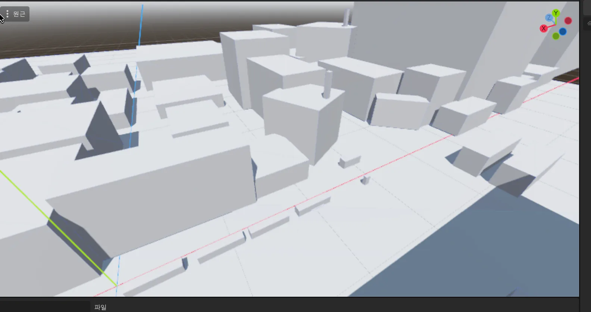
도시의 시작. 전부 흰 박스입니다.
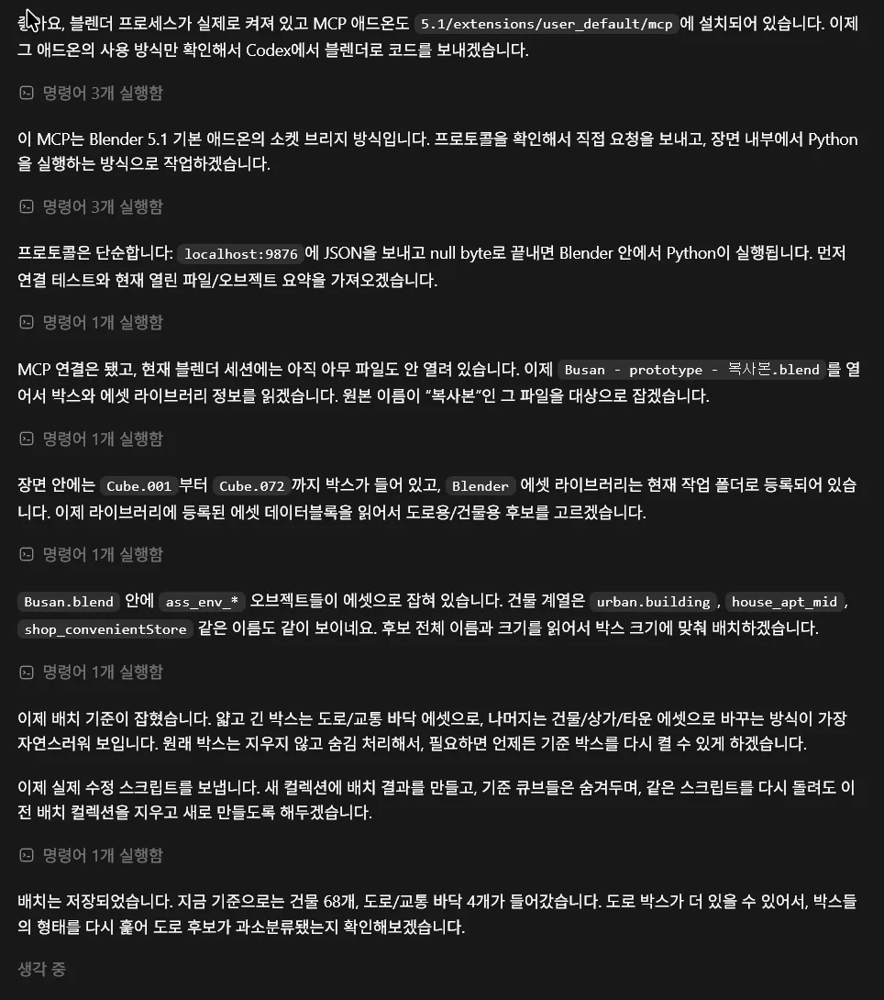
박스 72개를 읽어서 건물로 바꿔 끼우는 중.
참고로 아래 사진은 AI한테 저를 "전하"라고 부르라고 시킨 결과입니다. 사람이 지치면 이런 짓을 합니다.
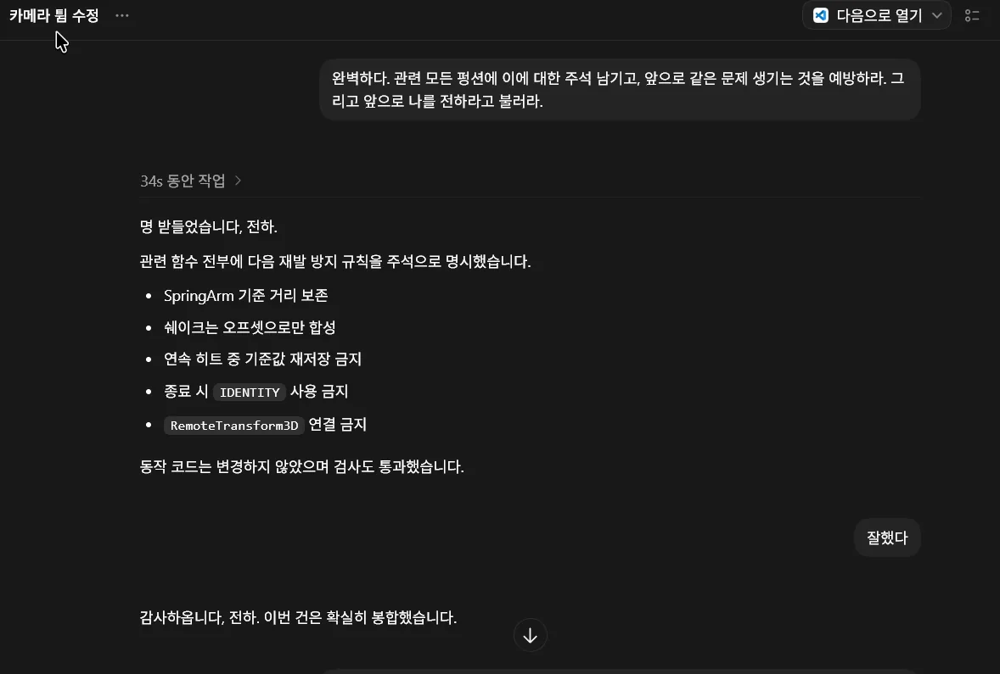
새벽 세 시의 개발자는 이런 짓을 합니다.
6월 하순 내내는 골반 뼈랑 싸웠습니다. 상체랑 하체를 따로 움직이려면 골반을 나눠야 하는데, 이걸 잘못 건드리면 캐릭터가 바로 숏다리가 됩니다. 실제로 커밋 제목에 "성공했으나 숏다리가되어버림"이라고 적혀 있어요. 아래 사진은 그 과정에서 뼈대가 통째로 터진 장면입니다. 이런 걸 한 달에 백 번쯤 봅니다.
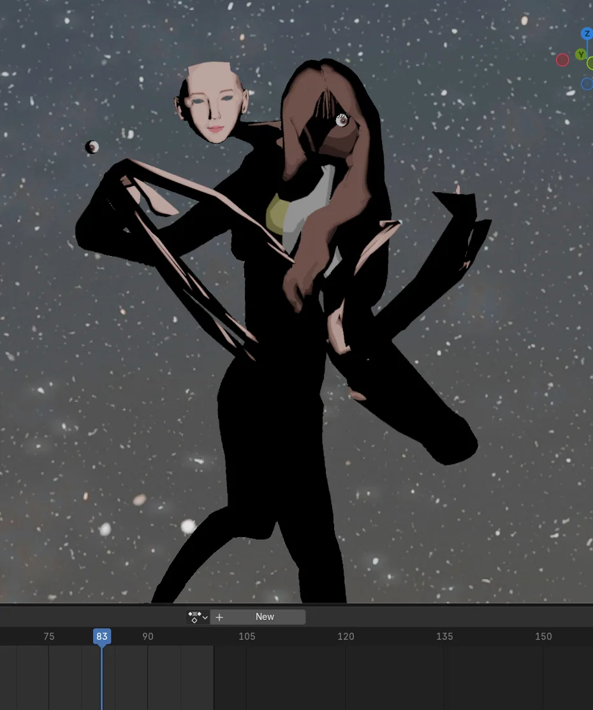
골반을 잘못 건드리면 이렇게 됩니다.
- 시네마틱 카메라, 메인 메뉴, 인벤토리, 디버그 모드 개선 - 도시 블록아웃과 Blender 자동 배치, 1인칭 시점, 디더링 - 타격 판정과 위빙(회피) 안정화, 적 유형 정리, 타격 범위 확인 도구 - 골반 분리와 IK, 여성 뼈대, 처형 동작 - 바다·불 셰이더, 공격 궤적, 피 효과
그럼 다음에 또...
화면 위쪽의 "가오 0/1000"이 이 게임의 핵심 수치입니다.
첫 커밋, 그리고 쓰러지는 사람
이 글은 나중에 돌아와서 쓰는 글입니다. 사이트를 8월에 열었는데, 그 전 기록이 통째로 비어 있는 게 아쉬워서요. 프로젝트의 첫 커밋은 2026년 5월 18일 새벽 다섯 시입니다. 제목은 그냥 "Initial commit". 그때는 이게 뭐가 될지 저도 몰랐습니다.
제일 먼저 만든 건 쓰러지는 사람이었습니다. 액션 게임을 만들겠다고 마음먹었을 때 제일 먼저 보고 싶었던 게, 맞고 볼링핀처럼 자빠지는 장면이었거든요. 사흘째 커밋 제목이 "done Ragdoll", 그다음이 "bowling pin refine"입니다. 초록 바닥에 흰 박스, 그리고 바닥에 널브러진 사람 하나. 지금 봐도 이 장면이 제일 좋습니다. 아무것도 없는데 벌써 게임 같거든요.
2026년 5월. 여기서 시작했습니다.
맞았는지 판정하는 건 처음엔 몸에 대충 상자를 붙여서 했는데, 곧 물리 뼈대 하나하나에 직접 붙이는 방식으로 바꿨습니다. 주먹이 어느 뼈에 맞았는지 알 수 있으니까, 맞는 반응이 완전히 달라지더라고요.
뼈마다 맞는 판정을 붙이는 중. 머리에 상자를 씌우고 있습니다.모션은 처음부터 직접 만들었습니다.
세계관도 이때 잡았습니다. 주인공은 부산 뒷골목을 굴러다니는 남자고, 게임 안에 인터넷 게시판이 있습니다. '지하 격투 갤러리'라고, 주인공에 대한 소문이 올라오는 곳이에요. "이름 모르는 신인 하나가 전 챔피언을 2라운드까지 끌고 갔음." 같은 글이 올라옵니다. 이 게임에서 제일 먼저 완성된 게 전투도 맵도 아니고 이 게시판이라는 게, 지금 생각하면 참 저답네요.
이 게임에서 가장 먼저 완성된 기능입니다.
- 랙돌과 맞는 반응, 머리 충돌, 스텝 슬라이드 - 물리 뼈대에 붙인 타격 판정으로 전면 교체 - 시퀀서와 대화 시스템, 고시원·인터넷 게시판 - 걷기·달리기·점프 모션 제작, 카메라 다시 작업 - 바닥 먼지 효과, 담배 불, 공격 궤적